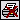
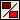

Save Page to .PDF
Save Page to .PDFA print job defines a set of forms and their print order. You give each print job a name, and then you identify the print job by that name in any print output request. Any number of print jobs can exist in a ManuScript, and a print job can reference any form in a ManuScript's form list. It can also specify the order in which the forms should be printed within the print job.
In addition to a list of forms, a print job also generates a control file. The control file provides a list of the forms in a print job in their correct print order. This file allows outside printing services to print the forms correctly.
When configuring print jobs, you can control various print job features:
- Document Type — Specifies the output type of the print job.
- Condition — Specifies the conditions that must be met for this print job to print.
- Forms — Configures which forms compose a print job.
You create and define print jobs in the Manage Print Jobs dialog box.
To open the Manage Print Jobs dialog:
- On the Edit menu, click Manage Print Jobs.
Print Job Toolbar Buttons
The Print Job toolbar contains the following buttons.
| Action | Description | |
|---|---|---|
| Add Print Job (CTRL+A) | Add a print job to the Print Jobs list. | |
|  | Delete Print Job (CTRL+D) | Delete a print job from the Print Jobs list. |
|  | Rename Print Job | Open the Rename Print Job dialog box to rename the selected print job. |
| View Print Job XML | Open the XML Viewer dialog box to view or edit the print job XML. | |
Adding a Print Job
 Forms Mapper View
Forms Mapper View
To print specific forms, you must set up a print job in the Manage Print Jobs dialog box in Forms Mapper. A print job may consist of one or more forms, and each form may consist of multiple sub-forms.
To add a print job:
- In the Manage Print Jobs dialog box, click the Add Print Job button .
The Add Print Job dialog box appears.
You can also:
Press CTRL+A. - Enter the name of the print job, and then click OK.
Adding a Print Job from an External ManuScript
Forms Mapper View
EXAMPLE Forms™ allows you to reference and include print jobs from other ManuScripts within a print job. This feature allows a print job to combine forms in the active ManuScript with a set of forms in another ManuScript. When including a print job in another print job, all forms from the referenced print job are placed into the output list at the precise spot of the reference in the XML.
Print jobs can be recursive. This means external print jobs can contain other external print jobs. External print jobs can also be dynamic. You can define rules that allow the Forms Engine to determine the name of the ManuScript and print job to reference at runtime.
To add a print job from an external ManuScript:
- On the appropriate line in the Used Jobs/Forms grid, click the Browse button
 .
. The ManuScript Catalog dialog box appears.
- Click the ManuScript with the print job, and then click Load.
The Select Print Job dialog box appears.
- Click the appropriate print job, and then click OK.
- (Optional) On the appropriate row, to the right of the Print Job Condition column, click the Ellipsis button
 to select a boolean field to determine whether the external print job is printed.
to select a boolean field to determine whether the external print job is printed.
Deleting a Print Job
Forms Mapper View
You can delete a print job if you no longer need it. Deleting a print job does not affect the forms contained in that print job.
To delete a print job:
- In the Print Jobs list, click the print job.
- Click the Delete Print Job button .
The Deletion Confirmation dialog box appears.
- Click Yes to confirm the deletion, or click No to cancel.
Adding a Form to a Print Job
Forms Mapper View
You must specify the forms to be printed in a print job.
To add a form to a print job:
- In the Print Jobs list, click the print job.
- In the Available Forms list, click one or more forms in the list, and then click the Add button .
You can multi-select using CTRL+click or SHIFT+click.
- (Optional) Adjust the order of the form by clicking
 or
or  .
.
To add all available forms, click the Add All button .
Removing a Form from a Print Job
Forms Mapper View
If you have a form in a print job that you do not wish to print, you can delete it from the print job.
To delete a form from a print job:
- In the Print Jobs list, click the print job.
- In the Used Jobs/Forms list, click the form to be removed.
- Click the Remove button .
You can multi-select using CTRL+click or SHIFT+click.
To remove all forms, click the Remove All button .
Moving a Form in a Print Job
Forms Mapper View
You can move a form up or down in the list so the forms print in a different sequence.
To change the order in which forms are printed in a print job:
- In the Print Jobs list, click the print job.
- In the Used Jobs/Forms list, click the form to be moved.
- Click the Move Up button or the Move Down button .
Setting the Document Type
Forms Mapper View
You can specify the type of output your print job generates. Options are:
- MSWord
- RTF
- HTML
- MIXED
By using the MIXED docType, users can set different output formats for each form in a print job. When this docType is enabled, the forms generator will determine the output format of each form by the output format of the first sub-form. For example, if the first sub-form in a given form is an HTML file, then all sub-forms of that form will be generated as an HTML file.
Before enabling the MIXED docType, you should be aware of the following:
- Each form in a print job must contain either all PDF sub-forms or all non-PDF sub-forms, regardless of the docType of the print job. For example, you can create a form with a word document sub-form, 2 .rtf sub-forms, and 4 HTML sub-forms. However, you can not create a form that contains 2 PDF sub-forms, one MSWord sub-form, and 3 HTML sub-forms. If one subform in a given form is a PDF, all sub-forms in the form must be PDFs.
- When using the MIXED docType, the value of the onePDF attribute cannot be set to 1 because it is impossible to combine two documents of different types into one. The value of the onePDF attribute must be set to either 0 or 2.
MSWord (.doc) forms generated through the EXAMPLE Forms™ Engine are actually generated using TXTextControlWords.exe rather than Microsoft Word. Because of this distinction, Duck Creek Technologies, Inc. strongly recommends that users preview the format of .doc source documents in TXTextControlWords.exe before generating forms with those source documents to ensure that they generate appropriately. For more information about previewing .doc source documents in TXTextControlWords.exe, see Previewing in TXTextControlWords.exe in the EXAMPLE Forms™ Reference Guide.
To set the document type (for all document types except MIXED):
- In the Print Jobs list, click the print job.
- In the Document Type list, click the desired document type.
The EXAMPLE Forms™ engine can generate any document type from .doc source forms, but it can only generate the .pdf document type from .pdf source forms. Specifying MSWord, RTF, or HTML as the output type for .pdf source documents will not generate MSWord, RTF, or HTML documents. Instead, all .pdf source documents will be generated as .pdf files.
To set the document type to MIXED:
- Open a text editor.
- Locate the print job in the ManuScript.
- Change the docType attribute to MIXED.
<printJob name="Both" docType="MIXED"> <printDoc name="Summary" /> <printDoc name="Detail" /> </printJob>
Setting the Print Condition
Forms Mapper View
You can specify a condition under which a print job executes.
To set a print condition:
- In the Manage Print Jobs dialog box, click the Ellipsis button to the right of the Condition text box.
The Reference Select dialog box appears.
- Click the appropriate boolean field, and then click OK.
Editing the Control File Field List
You can use a control file to define the order and location of forms that are to be printed. The control file provides information to a print service that aids in printing the forms. You can only edit the control file field list if you have purchased the EXAMPLE Forms™ license.
You can modify the control file to identify a block of control information to be written into the control file. For example, you can specify how many copies of a form to print, or to which printer to send them. You can also identify a list of fields to write out. This passes other information to the application that is responsible for processing the forms. If you are attached to a database, the values for username, email, and FullName are added to the control file from the database.
To edit the control file field list:
- On the Edit menu, click Edit Control File Field List.
The Control Block dialog box opens.
- Click Add.
The Reference Select dialog box opens.
- Navigate to the field to include in the control block, and then click OK.
- Repeat steps 2 and 3 for each field to include.
- In the Control Block dialog box, click OK.
For each field in the list, the value of the field will be added to the control file (order.xml).
The following XML will be added to the control file for the print job:
<ControlBlock> <[fieldname] value=""/> <[fieldName] value=""/> </ControlBlock>
So if the fields added to the control block were Policy.PolicyNumber and Client.FullName, the control block could look like this:
<ControlBlock> <Policy.PolicyNumber value="P123-897"/> <Client.FullName value="James Doe"/> </ControlBlock>